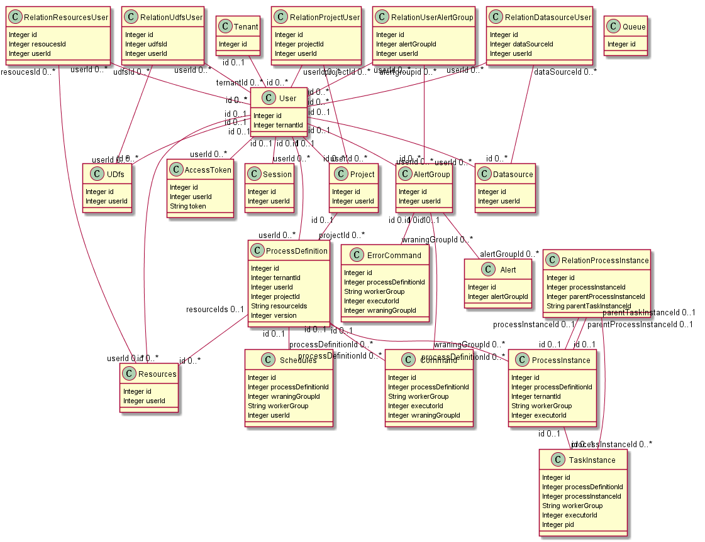
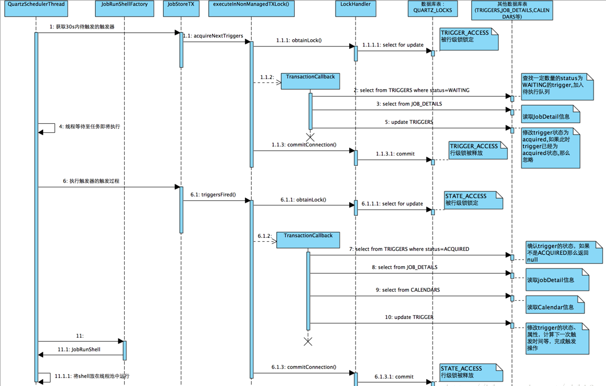

airflow要投入生产，定制成本太高，国产apache dolphinScheduler真香，只是可惜airflow使用python代码对dag进行版本控制的思路没有采用，得自己实现版本控制。
DolphinScheduler核心概念
- dag：任务关系依赖
- cron：任务时间依赖
- alert group：任务异常告警分组设置用户
- worker group：任务执行环境隔离
DolphinScheduler架构
DolphinScheduler的去中心化是Master/Worker注册到Zookeeper中，实现Master集群和Worker集群无中心，并使用Zookeeper分布式锁来选举其中的一台Master或Worker为“管理者”来执行任务。
MasterServer：MasterServer采用分布式无中心设计理念，MasterServer主要负责 DAG 任务切分、任务提交监控，并同时监听其它MasterServer和WorkerServer的健康状态。 MasterServer服务启动时向Zookeeper注册临时节点，通过监听Zookeeper临时节点变化来进行容错处理。
该服务内主要包含:- Distributed Quartz分布式调度组件，主要负责定时任务的启停操作，当quartz调起任务后，Master内部会有线程池具体负责处理任务的后续操作;
- MasterSchedulerThread是一个扫描线程，定时扫描数据库中的 command 表，根据不同的命令类型进行不同的业务操作
- MasterExecThread主要是负责DAG任务切分、任务提交监控、各种不同命令类型的逻辑处理
- MasterTaskExecThread主要负责任务的持久化
WorkerServer：WorkerServer也采用分布式无中心设计理念，WorkerServer主要负责任务的执行和提供日志服务。WorkerServer服务启动时向Zookeeper注册临时节点，并维持心跳。
该服务包含：- FetchTaskThread主要负责不断从Task Queue中领取任务，并根据不同任务类型调用TaskScheduleThread对应执行器。
- LoggerServer是一个RPC服务，提供日志分片查看、刷新和下载等功能
ZooKeeper：ZooKeeper服务，系统中的MasterServer和WorkerServer节点都通过ZooKeeper来进行集群管理和容错。另外系统还基于ZooKeeper进行事件监听和分布式锁。
- Alert：提供告警相关接口，接口主要包括告警两种类型的告警数据的存储、查询和通知功能。其中通知功能又有邮件通知和SNMP(暂未实现)两种。
- API：API接口层，主要负责处理前端UI层的请求。该服务统一提供RESTful api向外部提供请求服务。 接口包括工作流的创建、定义、查询、修改、发布、下线、手工启动、停止、暂停、恢复、从该节点开始执行等等。
- UI：系统的前端页面，提供系统的各种可视化操作界面，详见系统使用手册部分。
选型DolphinScheduler的考虑
pros
- 去中心化设计（netty+zookeeper），scheduler和worker都实现了高可用；
- 可视化拖拽设计dag流程，友好的task参数配置；
- java工程化技术栈(springboot+mybatis+vue)，学习和维护成本低；
- 源码有完整的单元测试用例
- 告警/通知机制，提供dingtalk/email等集成；
cons
- 具体任务类型依赖的库耦合在同一个项目未做插件化；
- 自定义任务类型实现必须侵入性修改源码，插件化task类型的pr在开发中；
- 不支持数据血缘采集；
- 不支持sentry告警集成；
- 不支持ldap认证；
DolphinScheduler的Process/Task状态
对应task_instance表的state字段
- submit_success：提交成功
- running：正在运行
- ready_pause：准备暂停
- pause：暂停
- ready_stop：准备停止
- stop：停止
- failure：失败
- success：成功
- need_fault_tolerance：需要容错，worker节点宕机，任务标记为需要容错，然后被master接管后重新分派给其他worker处理
- kill：中止
- waiting_thread：等待线程
- waiting_depend_node_complete：等待依赖完成
调度器处理的状态： submit_success, ready_pause, ready_stop, need_fault_tolerance，waiting_thread，waiting_depend_node_complete
任务运行状态：pause，running
任务终止状态：stop，success，kill，failure
DolphinScheduler的异常处理机制
- Master节点容错：依赖于ZooKeeper的Watcher机制实现（
EPHEMERAL_SEQUENTIAL），watch到master节点remove时，会将host为当前节点且任务状态in[正在运行，准备暂停，准备停止]的任务的host设置为null，并重新生成新的command； - Worker节点容错：依赖于ZooKeeper的Watcher机制实现（
EPHEMERAL_SEQUENTIAL），watch到worker节点remove时，会将host为当前节点且任务状态in[正在运行]的任务kill掉，然后状态改为需要容错; - 任务失败重试：是任务级别的，是调度系统自动进行的，比如一个Shell任务设置重试次数为3次，那么在Shell任务运行失败后会自己再最多尝试运行3次；
- 流程失败恢复：是流程级别的，是手动进行的，恢复是从只能从失败的节点开始执行或从当前节点开始执行；
- 流程失败重跑：是流程级别的，是手动进行的，重跑是从开始节点进行；
调度规则
- 定时调度：cron表达式，提供可视化生成cron；
- 事件触发：从当前节点开始执行、从失败节点开始执行、补数、重跑、暂停/恢复暂停、停止；
- 调度实现：基于
quartz分布式调度器
DolphinScheduler的表结构

表前缀：
t_ds_
DolphinScheduler的表可分为用户，资源，用户资源授权，调度表（quartz），调度记录表，运维6类
用户表
- tenant：租户
- user：用户
- access_token：访问ds后端的token
- session：用户登陆session
资源表
- queue：队列
- resources：资源文件
- udfs：UDF资源
- datasource：数据源
- project：项目
- process_definition：流程定义，存储dag定义数据；
用户资源授权表
- relation_project_user：用户关联的项目
- relation_datasource_user：用户关联的数据源
- relation_udfs_user：用户关联的UDF函数
- relation_resources_user：用户关联的资源
调度记录表
- schedules：流程定时调度，存储process_definition的时间调度配置；
- process_instance：流程实例
- relation_process_instance：子流程，用于处理流程定义中含有子流程的情况；
- task_instance：任务实例
- command：任务执行命令
- error_command：任务执行错误命令
运维表
- alert：告警信息
- alertgroup：告警组
- relation_user_alertgroup：用户关联告警组
- version_ds：版本信息
quartz调度表
分布式quartz：保证了同一时刻有且只有一个服务器在调用定时器任务

- qrtz_triggers：存储定义的trigger；
- qrtz_cron_triggers：存储 Cron Trigger，包括 Cron 表达式和时区信息；
- qrtz_fired_triggers：存储与已触发的 Trigger 相关的状态信息，以及相联 Job 的执行信息；
- qrtz_blob_triggers：以 Blob 类型存储Quartz的Calendar信息；
- qrtz_simple_triggers：存储SimpleTrigger，包括重复次数，间隔，以及已触的次数；
- qrtz_simprop_triggers：存储简单的存储CalendarIntervalTrigger和DailyTimeIntervalTrigger两种类型的触发器；
- qrtz_paused_trigger_grps：存储已暂停的 Trigger 组的信息；
- qrtz_calendars：自定义时间段，可以控制触发器在这个时间段内触发/不触发；
- qrtz_scheduler_state：存储一个集群中其他调度器 (Scheduler) 的状态；
- qrtz_job_details：存储每一个已配置的 Job 的详细信息(jobDetail)；
- qrtz_locks：存储程序的悲观锁的信息（行锁实现同一个任务不会被多次调度）；
代码结构
依赖
- dolphinscheduler-service：核心service层，包含log，queue，zk，quartz.cron等逻辑；
- dolphinscheduler-dao：mybatis元数据库的数据访问层、外部数据源配置；
- dolphinscheduler-common：枚举定义、不同任务类型的参数定义、辅助工具类；
- dolphinscheduler-plugin-api：Alert插件api；
- dolphinscheduler-remote：基于netty实现的rpc框架；
- dolphinscheduler-dist：协议、部署；
部署服务
- dolphinscheduler-ui：ds前端网站；
- dolphinscheduler-api：rest服务；
- dolphinscheduler-server：Master和Worker；
- dolphinscheduler-alert：告警服务AlertServer；